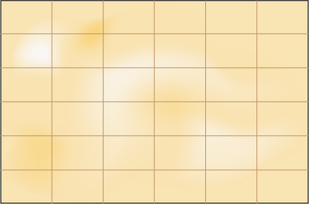

Разделим пустыню на ряд элементарных прямоугольников, размер которых совпадает с размером клетки для льва (рис. 1). После чего перебираем полученные прямоугольники, каждый раз выбирая заданную область случайным образом. Если в данной области окажется лев, то мы поймаем его, накрыв клеткой.
Рис. 1. Разбиение пустыни на ряд элементарных прямоугольников
Метод случайных чисел является вариантом метода простых итераций, в котором происходит перебор участков пустыни для поиска льва. Разница только в том, что области выбираются не последовательно, а случайно. Таким образом, в лучшем случае поиск может закончиться сразу же, а в худшем — превратиться в метод перебора.
Поскольку номер области выбирается случайно, он может выпасть больше одного раза. Однако переходить второй раз в уже просмотренную область, необходимости нет.

Средний самец льва имеет длину около трех метров и весит от 180 до 230 килограмм.
Львы питаются не только убитыми животными, они также не брезгуют падалью.